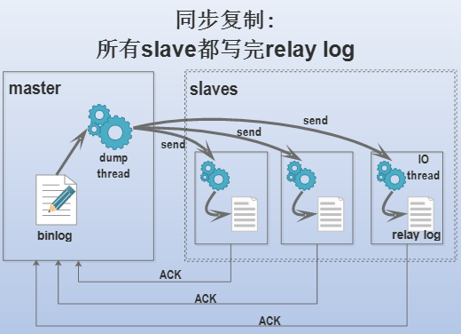
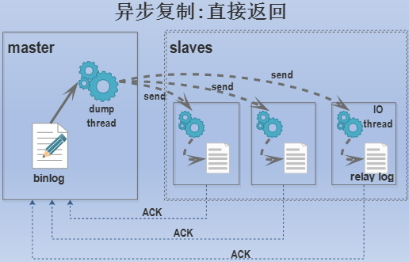
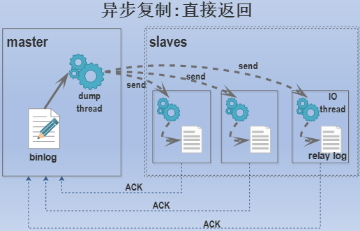

MySQL
安装使用
1.安装 可以直接使用docker进行安装
docker run -p 3306:3306 --name mymysql -e MYSQL_ROOT_PASSWORD=123456 -d mysql
2.使用 可以使用如下命令连接mysql数据库
mysql -uroot -p
日志类别
Mysql中共有5种日志文件，分别为： 1.错误日志(error log) 主要记录mysql服务的启停时正确和错误的信息，以及启动、停止、运行过程中的错误信息。可以通过以下命令查看错误日志的保存位置
mysql> show variables like 'log_error';
2.查询日志(general log) 记录建立的客户端连接和执行的语句。查询日志分为一般查询日志和慢查询日志，它们是通过查询是否超出变量 long_query_time 指定时间的值来判定的。在超时时间内完成的查询是一般查询，可以将其记录到一般查询日志中（默认是关闭的），超出时间的查询是慢查询。使用" --general_log={0|1} "来决定是否启用一般查询日志，使用" --general_log_file=file_name "来指定查询日志的路径。 与查询日志有关的变量有：
long_query_time = 10 # 指定慢查询超时时长(秒)，超出此时长的属于慢查询，会记录到慢查询日志中
log_output={TABLE|FILE|NONE} # 定义一般查询日志和慢查询日志的输出格式，不指定时默认为file
与一般查询有关的变量有：
general_log=off # 是否启用一般查询日志，为全局变量，必须在global上修改。
sql_log_off=off # 在session级别控制是否启用一般查询日志，默认为off，即启用
general_log_file=/mydata/data/hostname.log # 默认是库文件路径下主机名加上.log
3.慢查询日志(slow log) 记录所有执行时间超过long_query_time的所有查询或不使用索引的查询。 与慢查询有关的参数
log_slow_queries={yes|no} # 是否启用慢查询日志，默认不启用
slow_query_log={1|ON|0|OFF} # 也是是否启用慢查询日志，此变量和log_slow_queries修改一个另一个同时变化
slow_query_log_file=/mydata/data/hostname-slow.log #默认路径为库文件目录下主机名加上-slow.log
log_queries_not_using_indexes=OFF # 查询没有使用索引的时候是否也记入慢查询日志
4.二进制日志(bin log) 记录所有更改数据的语句，可用于数据复制。MySQL默认没有启动二进制日志，要启用二进制日志使用 --log-bin=[on|off|file_name] 选项指定，或者在配置文件中的[mysqld]部分设置log-bin也可以。
[mysqld]
log-bin=[on|filename]
与二进制日志有关的参数
log_bin = {on | off | base_name} #指定是否启用记录二进制日志或者指定一个日志路径(路径不能加.否则.后的被忽略)
sql_log_bin ={ on | off } #指定是否启用记录二进制日志，只有在log_bin开启的时候才有效
expire_logs_days = #指定自动删除二进制日志的时间，即日志过期时间
binlog_do_db = #明确指定要记录日志的数据库
binlog_ignore_db = #指定不记录二进制日志的数据库
...
5.中继日志(relay log)
主从复制时使用的日志，如图为relay log在主从复制过程中的位置。
 下面将对主从复制高可用方案做简单介绍。
下面将对主从复制高可用方案做简单介绍。
高可用方案
数据复制提供了数据库读写分离的能力，写操作只能在Master节点。MySQL支持4种不同的同步方式：同步(synchronous)、半同步(semisynchronous)、异步(asynchronous)、延迟(delayed)。
1.同步
客户端发送DDL/DML语句给master，master执行完毕后还需要等待所有的slave都写完了relay log才认为此次DDL/DML成功，然后才会返回成功信息给客户端。

2.半同步
客户端发送DDL/DML语句给master，master执行完毕后还要等待一个slave写完relay log并返回确认信息给master，master才认为此次DDL/DML语句是成功的，然后才会发送成功信息给客户端。半同步复制只需等待一个slave的回应，且等待的超时时间可以设置，超时后会自动降级为异步复制。
 3.异步
客户端发送DDL/DML语句给master，master执行完毕立即返回成功信息给客户端，而不管slave是否已经开始复制。这样的复制方式导致的问题是，当master写完了binlog，而slave还没有开始复制或者复制还没完成时，slave上和master上的数据暂时不一致，且此时master突然宕机，slave将会丢失一部分数据。

4.延迟
顾名思义，延迟复制就是故意让slave延迟一段时间再从master上进行复制。
主从复制设置
1.为master和slave设定不同的server-id，这是主从复制结构中非常关键的标识号。到了MySQL 5.7，不设置server id就无法开启binlog。设置server id需要重启MySQL实例。
2.开启master的binlog。刚安装并初始化的MySQL默认未开启binlog，可以手动设置binlog且为其设定文件名，否则默认以主机名为基名时修改主机名后会找不到日志文件。
3.最好设置master上的变量sync_binlog=1(MySQL 5.7.7之后默认为1，之前的版本默认为0)，这样每写一次二进制日志都将其刷新到磁盘，让slave服务器可以尽快地复制。防止万一master的二进制日志还在缓存中就宕机时，slave无法复制这部分丢失的数据。
4.最好设置master上的redo log的刷盘变量innodb_flush_log_at_trx_commit=1(默认值为1)，这样每次提交事务都会立即将事务刷盘保证持久性和一致性。
5.在slave上开启中继日志relay log。这个是默认开启的，同样建议手动设置其文件名。
6.可以在master上专门创建一个用于复制的用户，它只需要有复制权限replication slave用来读取binlog。
7.确保slave上的数据和master上的数据在"复制的起始position之前"是完全一致的。如果master和slave上数据不一致，复制会失败。
8.记下master开始复制前binlog的position，因为在slave连接master时需要指定从master的哪个position开始复制。
9.考虑是否将slave设置为只读，也就是开启read_only选项。这种情况下，除了具有super权限(mysql 5.7.16还提供了super_read_only禁止super的写操作)和SQL线程能写数据库，其他用户都不能进行写操作。这种禁写对于slave来说，绝大多数场景都非常适合。
*在slave上没有开启read-only选项时，任何有写权限的用户都可以进行写操作，这些操作都会记录到binlog中。如果slave要作为某些slave的master，那么在slave2上必须要开启log-slave-updates和binlog选项。
3.异步
客户端发送DDL/DML语句给master，master执行完毕立即返回成功信息给客户端，而不管slave是否已经开始复制。这样的复制方式导致的问题是，当master写完了binlog，而slave还没有开始复制或者复制还没完成时，slave上和master上的数据暂时不一致，且此时master突然宕机，slave将会丢失一部分数据。

4.延迟
顾名思义，延迟复制就是故意让slave延迟一段时间再从master上进行复制。
主从复制设置
1.为master和slave设定不同的server-id，这是主从复制结构中非常关键的标识号。到了MySQL 5.7，不设置server id就无法开启binlog。设置server id需要重启MySQL实例。
2.开启master的binlog。刚安装并初始化的MySQL默认未开启binlog，可以手动设置binlog且为其设定文件名，否则默认以主机名为基名时修改主机名后会找不到日志文件。
3.最好设置master上的变量sync_binlog=1(MySQL 5.7.7之后默认为1，之前的版本默认为0)，这样每写一次二进制日志都将其刷新到磁盘，让slave服务器可以尽快地复制。防止万一master的二进制日志还在缓存中就宕机时，slave无法复制这部分丢失的数据。
4.最好设置master上的redo log的刷盘变量innodb_flush_log_at_trx_commit=1(默认值为1)，这样每次提交事务都会立即将事务刷盘保证持久性和一致性。
5.在slave上开启中继日志relay log。这个是默认开启的，同样建议手动设置其文件名。
6.可以在master上专门创建一个用于复制的用户，它只需要有复制权限replication slave用来读取binlog。
7.确保slave上的数据和master上的数据在"复制的起始position之前"是完全一致的。如果master和slave上数据不一致，复制会失败。
8.记下master开始复制前binlog的position，因为在slave连接master时需要指定从master的哪个position开始复制。
9.考虑是否将slave设置为只读，也就是开启read_only选项。这种情况下，除了具有super权限(mysql 5.7.16还提供了super_read_only禁止super的写操作)和SQL线程能写数据库，其他用户都不能进行写操作。这种禁写对于slave来说，绝大多数场景都非常适合。
*在slave上没有开启read-only选项时，任何有写权限的用户都可以进行写操作，这些操作都会记录到binlog中。如果slave要作为某些slave的master，那么在slave2上必须要开启log-slave-updates和binlog选项。